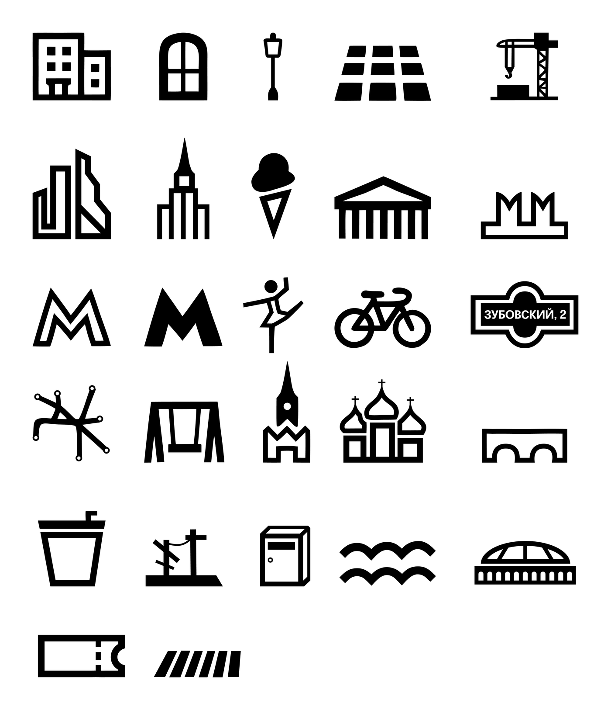
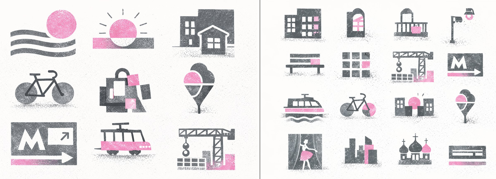
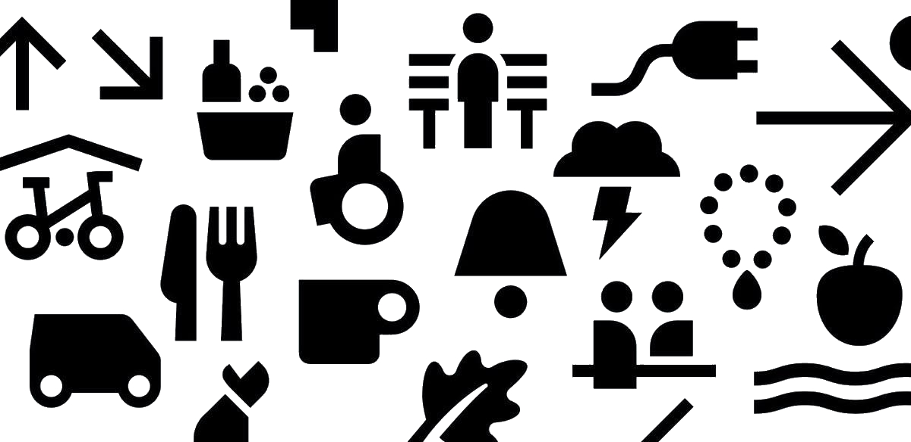
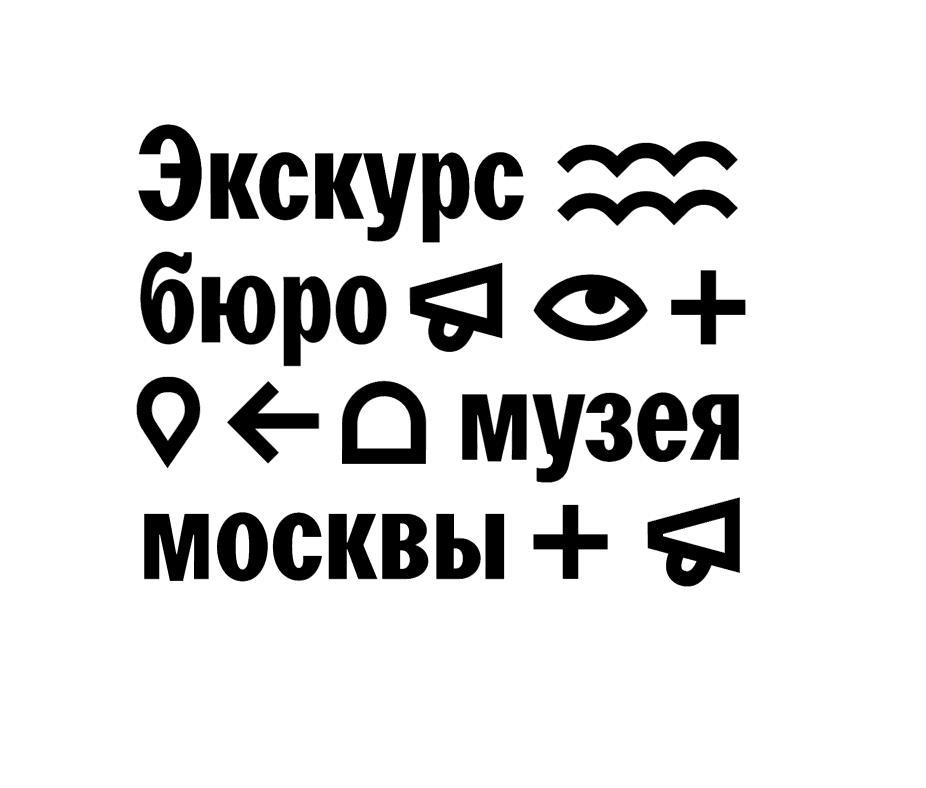
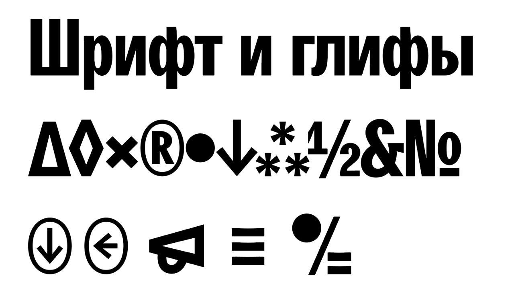
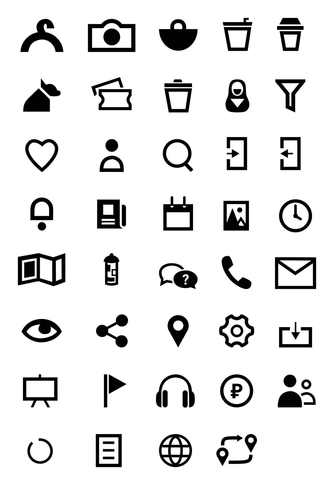

Тематические иконки
Образы Москвы и городской среды: архитектура, метро, транспорт, городские объекты, культурные и узнаваемые московские символы.

кейс_02
Система функциональных и тематических иконок для проектов музея
В рамках стажировки в Музее Москвы я работала над системой иконографии: от определения необходимых иконок и поиска стилистического направления до двух финальных наборов.
Проект прошёл несколько итераций по обратной связи старшего дизайнера: первоначальное экспериментальное направление было переработано в более лаконичную чёрно-белую систему, связанную с визуальным языком музея.
Задача
Нужно было сформировать набор иконок для Музея Москвы двух типов: функциональных и тематических.
А · Функциональные
Для интерфейсных действий и разделов
В исходной задаче: правила посещения, интернет-магазин и элементы интерфейса
Б · Тематические
Связанные с Москвой и городской средой
В исходной задаче: транспорт, архитектура, городские объекты, достопримечательности и другие узнаваемые элементы Москвы
Сначала я определила, какие именно иконки понадобятся системе, и разделила их на функциональные и тематические.
Задача была не просто нарисовать несколько знаков, а собрать единый визуальный язык, который можно будет расширять и использовать в разных проектах музея.
37
функциональных иконок
разделы и действия на сайте
27
тематических иконок
концепция — город, это то, что нас окружает
Незадолго до работы над иконографикой на сайте Музея Москвы обновили типографику: в интерфейсе появился Agipo Mono — моноширинный шрифт с тонким начертанием и выраженным печатным характером. Мне хотелось, чтобы будущая система иконок поддерживала этот визуальный язык, поэтому в качестве одного из ключевых приёмов я выбрала эффект печатной фактуры.
Первую концепцию построила на эстетике Кандинского и авангардной живописи — с геометричными формами, ритмом и простыми композициями. Чтобы не перегружать систему, сократила палитру до серого и розового, а печатная фактура помогла связать иконки с обновлённой типографикой сайта.
На основе этого направления с помощью ChatGPT собрала первый эскизный вариант иконок и отправила его старшему дизайнеру для обратной связи.

После первой итерации я получила комментарии старшего дизайнера.
Систему нужно сделать значительно проще и ближе к существующему визуальному языку музея.
Новые ориентиры



На основе этих ориентиров я отказалась от первоначальной цветной концепции и перешла к более лаконичной системе. Новые иконки отрисовала в Adobe Illustrator, а затем доработала и собрала в единые паки в Figma.
В результате получилось два пака.
Образы Москвы и городской среды: архитектура, метро, транспорт, городские объекты, культурные и узнаваемые московские символы.

Знаки для интерфейсных и сервисных сценариев: поиск, профиль, карта, контакты, загрузка, мероприятия, билеты и другие действия.

Итог
По итогам нескольких итераций первоначальное экспериментальное направление превратилось в более лаконичную и универсальную систему иконографии.
Я подготовила два согласованных набора — тематический и функциональный, которые были переданы команде Музея Москвы для дальнейшего использования в проектах.
Для меня этот проект был особенно ценен опытом работы внутри реальной айдентики бренда и обратной связью старшего дизайнера: решение менялось не ради стилистического эксперимента, а в соответствии с контекстом музея и будущими сценариями использования.